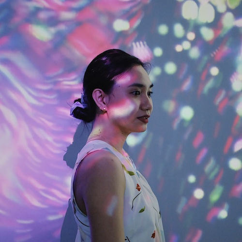

Benz Dumol
Senior Frontend Developer @ Cambridge University Press & Assessment
Benz is a frontend developer with 10+ years of web development experience, specializing in creation of mobile-responsive corporate and e-commerce websites.
She is also experienced in project management, liaising with stakeholders on their technical needs, leading development teams, planning and initializing development processes, setting timeframes, and communicating project details to the team.
She received her bachelor's degree in Computer Science from the University of the Philippines Visayas.